Proyectos Destacados
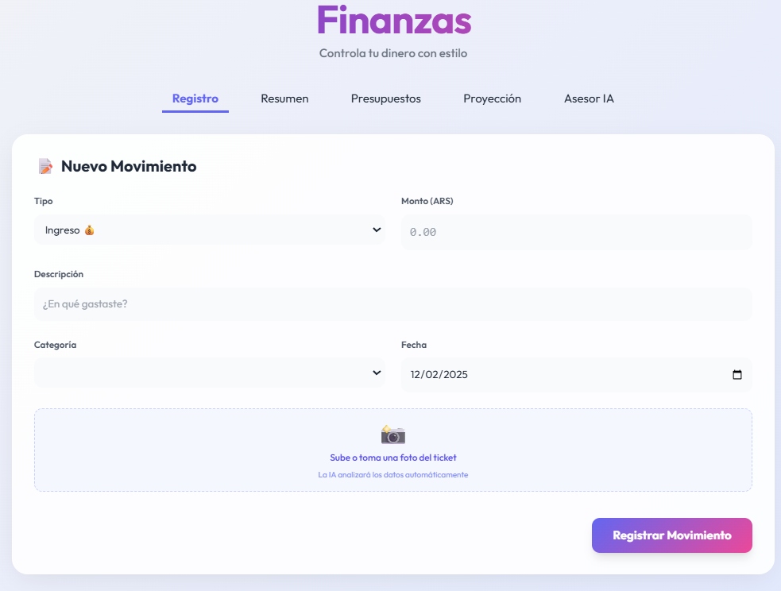
Smart Finance: Gestión con IA
Una Progressive Web App (PWA) "local-first" para el control de gastos personales. Integra la API de Google Gemini para escanear tickets automáticamente y ofrecer asesoramiento financiero personalizado, sin servidores intermedios.
- Escaneo de tickets con visión artificial (IA)
- Asesor financiero inteligente (chatbot)
- 100% privada: los datos nunca salen del dispositivo
- JavaScript
- Gemini API
- Chart.js
- PWA
- Hecho con Gemini AI
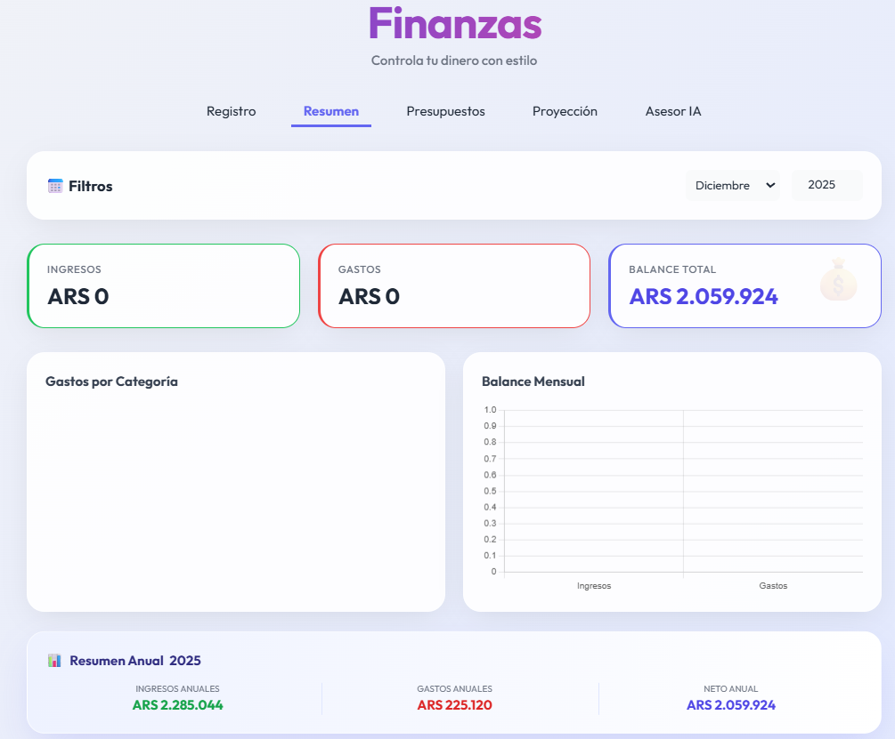
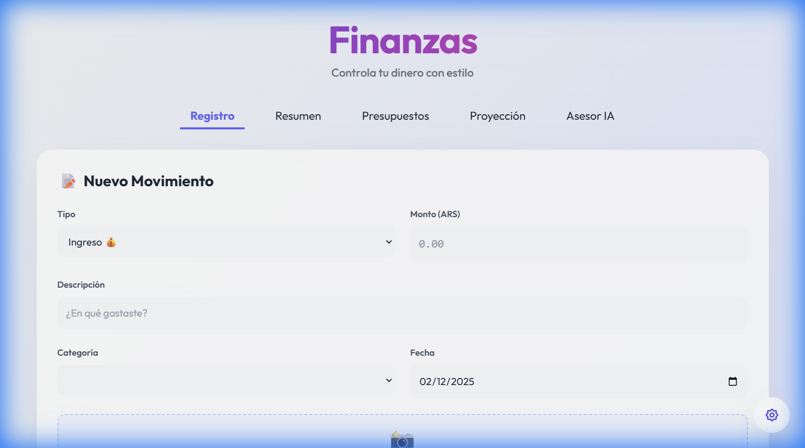
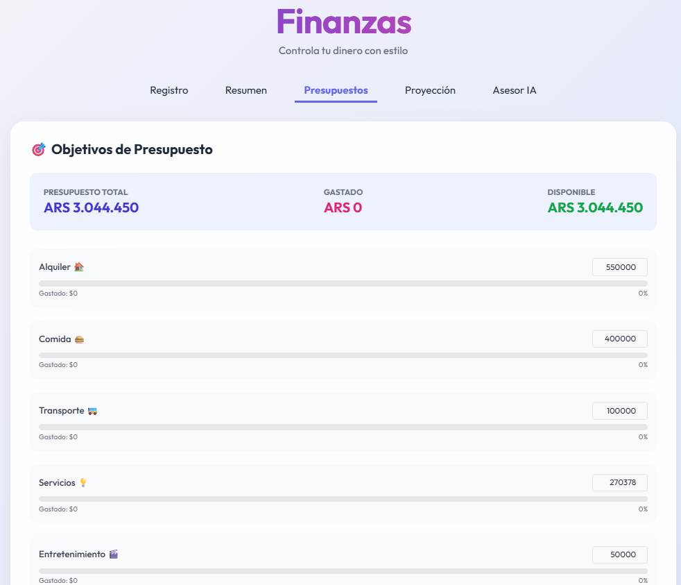
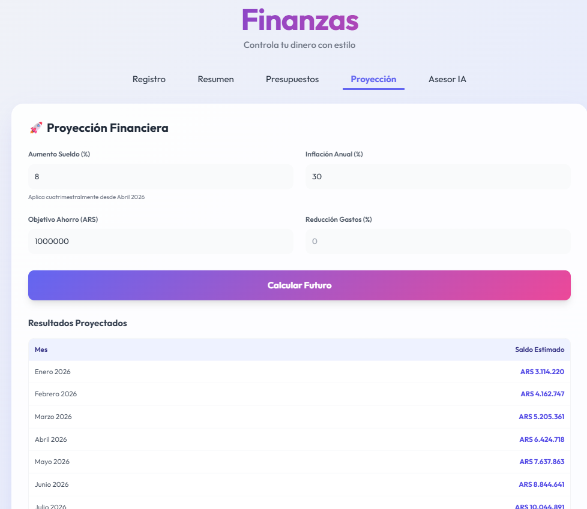
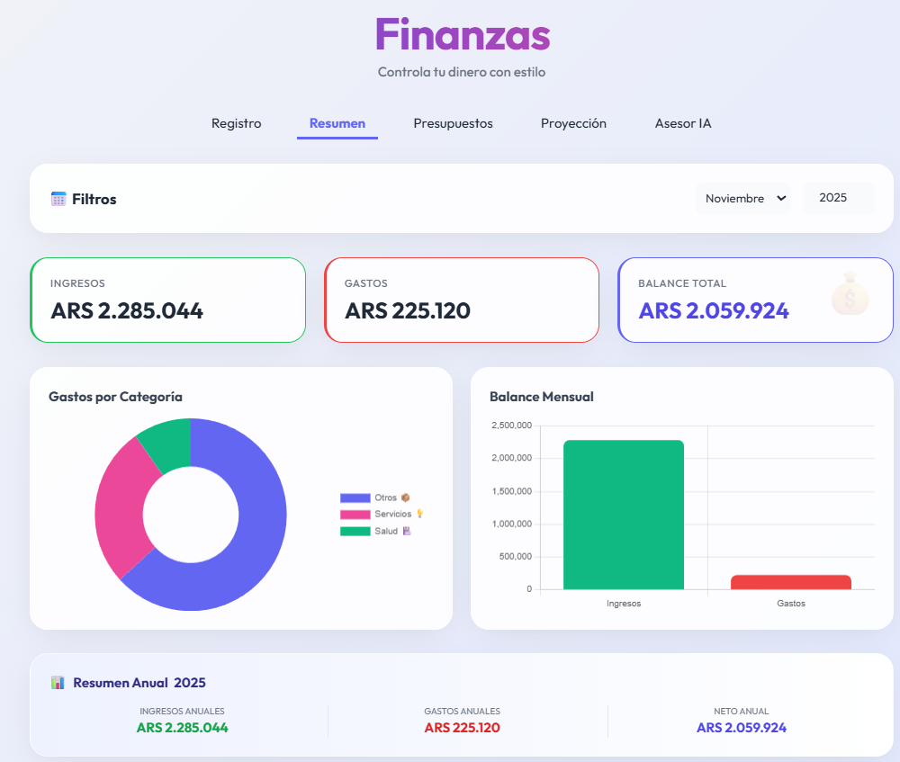
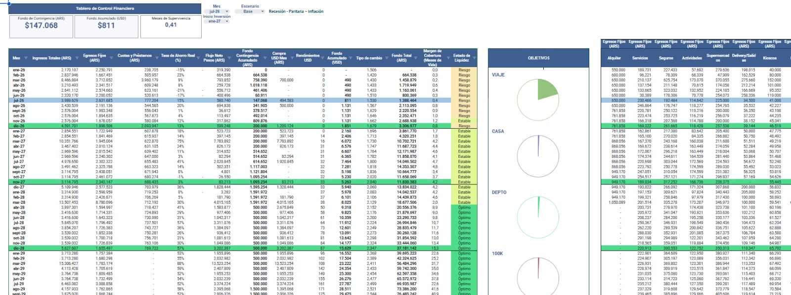
Flujo de Fondos: Tablero Automatizado
Sistema de gestión de flujo de fondos personal construido sobre Google Sheets, con un modelo de proyección multianual y una web app de solo lectura (HtmlService) servida desde Apps Script. El tablero se recalcula solo: sin carga manual ni mantenimiento.
- Escenarios Optimista / Base / Pesimista con recálculo automático
- Estado de liquidez mes a mes y margen de cobertura proyectado
- Simulador de cartera en USD (bonos, CEDEARs, money market)
- Google Sheets
- Apps Script
- HtmlService
- Chart.js
- Hecho con Claude Fable 5
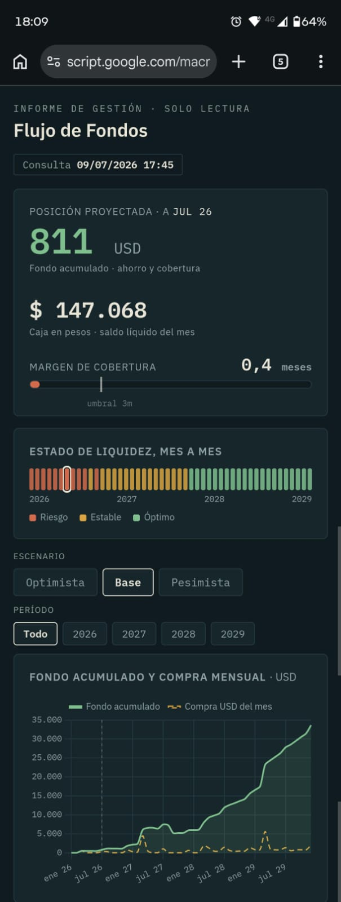
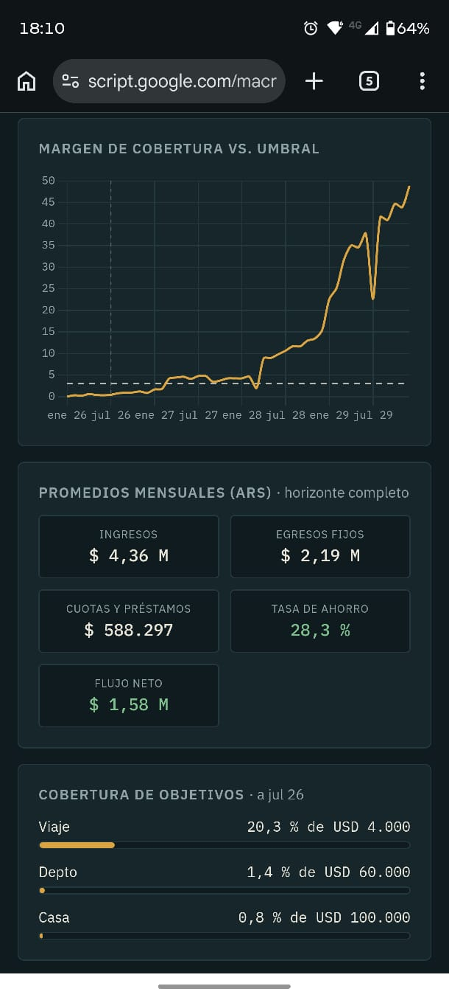
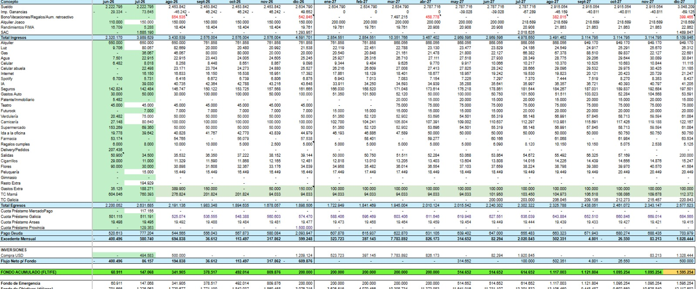
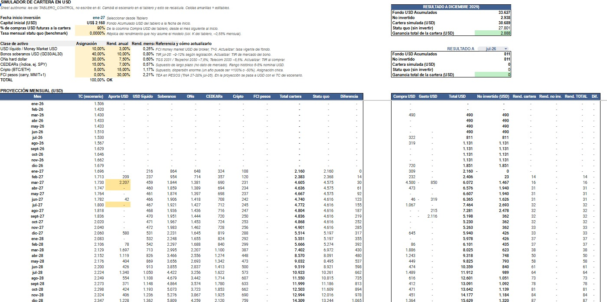
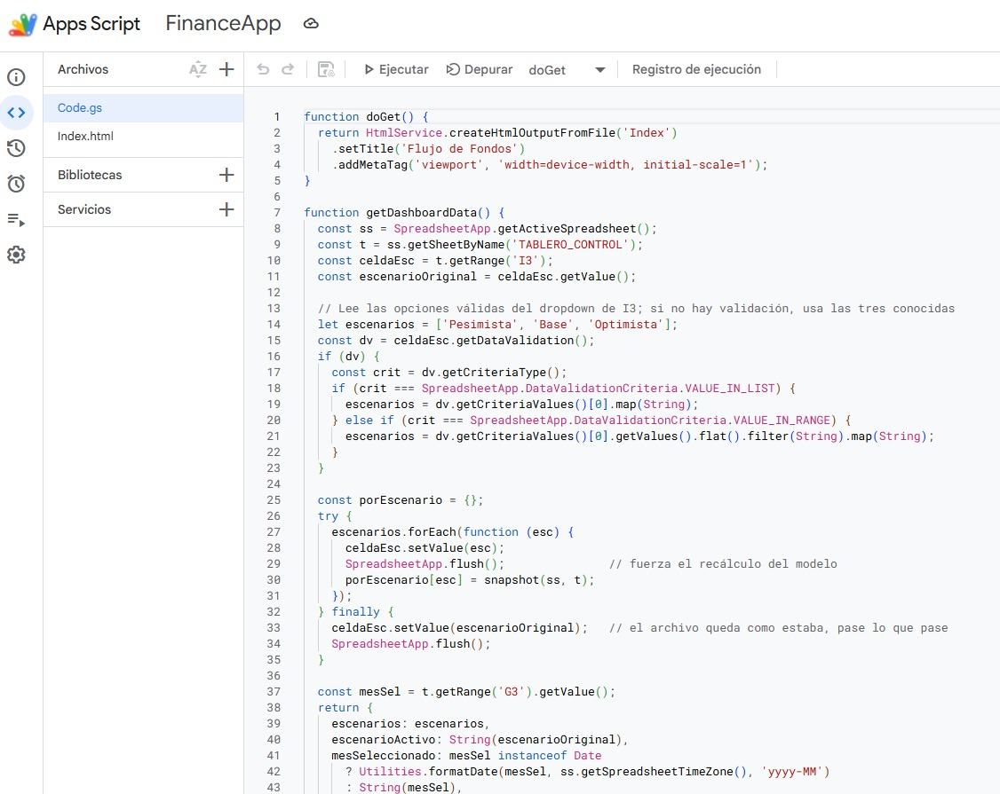

CoffeeHouse: Bitácora de Calibración de Café
Una PWA de calibración de espresso que vive en un teléfono montado en la barra: registra molienda, dosis, rendimiento y tiempo por variedad y método. Construida sin escribir una línea de código, dirigiendo al modelo Claude Fable 5 de Anthropic con especificaciones escritas: cuatro versiones iteradas por uso real, hoy en producción diaria.
- PWA modo kiosk: offline, wake lock y timer que sobrevive la suspensión
- Registro por variedad y método: molienda, dosis, ratio y perfil de cata
- Cuatro versiones evolucionadas con feedback de uso real, no por plan cerrado
- HTML/JS
- PWA
- localStorage
- Hecho con Claude Fable 5